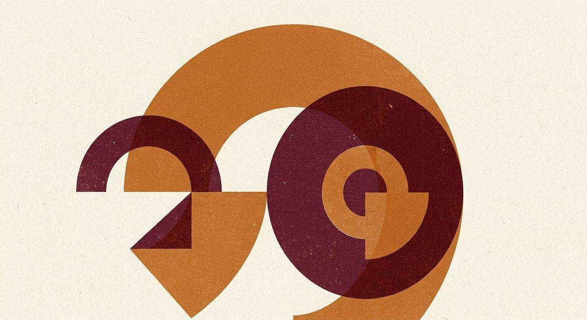

Постоянно спрашивают: «а чем это сделать?». Собрал то, чем пользуюсь сам — по задачам, без воды. Выбери, что нужно сделать, и получи подборку.
Всё, чем пользуюсь сам — по категориям. Ищи по названию или по задаче, фильтруй по доступу.
Не список инструментов, а путь до результата. Каждая связка — три шага и понятно, что за чем.
Рынок меняется каждый месяц. Здесь — что я убрал, добавил или перепроверил, и почему.
Почему карта не проходит. Дело не в блокировке сервиса — сайт открывается, аккаунт создаётся. Платёж отсекает процессинг: он смотрит на первые шесть цифр карты и по ним видит российский банк. Смена страны в профиле и зарубежный адрес не помогают — проверяется только номер карты. Это касается и Visa, и Mastercard, и МИР.
Платишь российской картой, внутри — сразу несколько моделей. Ничего настраивать не надо, VPN не нужен. Мой основной способ.
Выпускаешь карту с зарубежными первыми цифрами и пополняешь рублями. Автопродление работает, но есть комиссии на каждом шаге.
Самый стабильный и самый хлопотный: нужна поездка и местные документы. Окупается, если платишь не только за нейросети.
Как получить доступ из России. Часть инструментов работает только через VPN и просит зарубежную карту. Я почти всё запускаю через один агрегатор — без VPN, оплата рублями, инструменты собраны в одном месте. Ссылку и как настроить — кину в канале.
Забрать доступ и следить за находками →